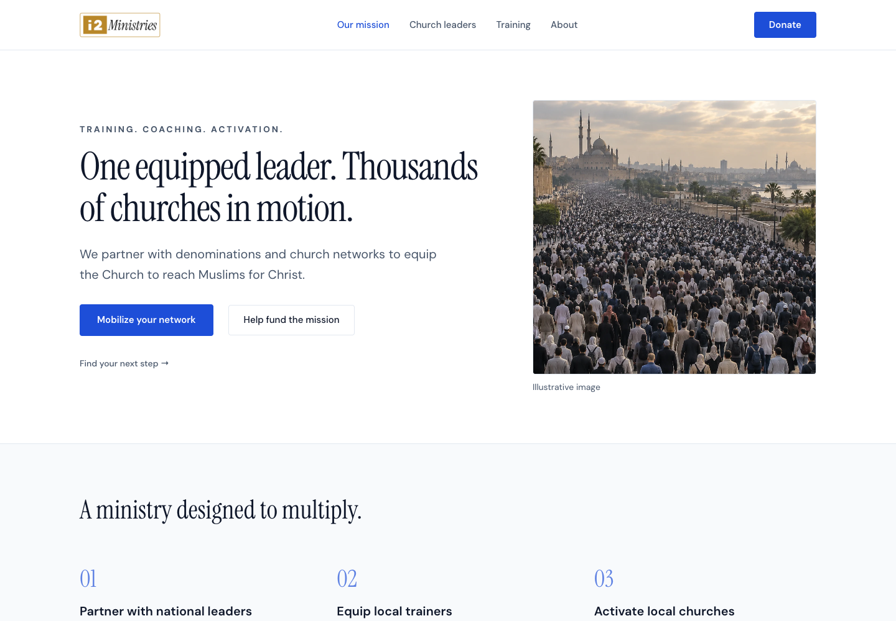
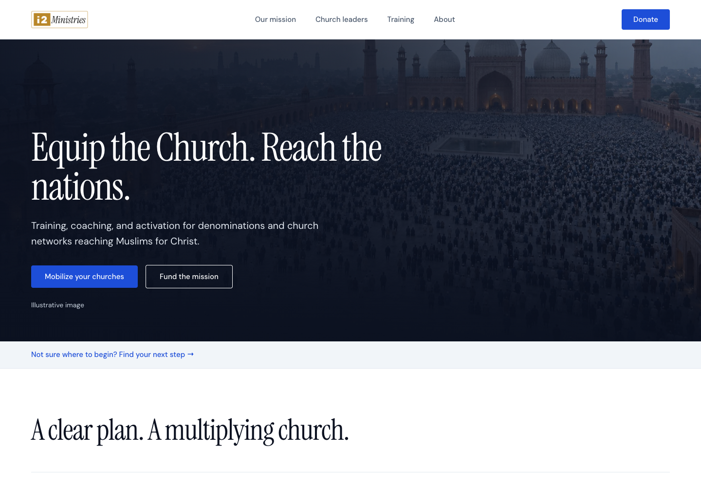

Mobilize the Church
A bright editorial layout that gives the leadership model room to stand out. The best fit for network leaders and donors evaluating a strategic partnership.

The strongest story is how i2 equips denominational leaders, helps them train trainers, and supports churches as they put that training into practice. Donors fund the system that makes this multiplication possible.
A bright editorial layout that gives the leadership model room to stand out. The best fit for network leaders and donors evaluating a strategic partnership.

A wide crowd image and readable dark overlay create a stronger first impression. The ministry model and clear leader/donor actions keep it purposeful.

Network leaders and donors come first, with routes for local churches and individual learners. Visitors can go back, skip, or reopen the guide. The working implementation waits until any active privacy choice is complete and replaces the homepage ebook popup.
| Visitor | Useful next step |
|---|---|
| Denominational or network leader | Explore the model, discuss a launch with i2, review the formal ministry agreement, or coordinate existing work with WISE. |
| Donor | Understand giving opportunities, discuss a strategic gift, explore scholarships, or proceed to existing giving options. |
| Local church or ministry team | Find training, explore the initiative, or coordinate outreach. |
| Individual learner | Start free training on WADI, explore MMWU, or compare pathways. |